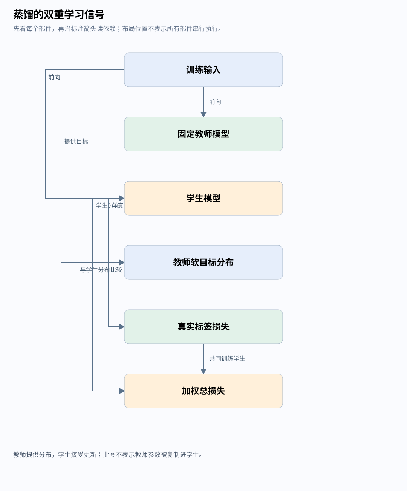

第12课 / 14课
规模、蒸馏与涌现
更大就更好？小模型能学大模型什么？先看固定预算怎样分给参数和数据，再看教师分布能传递哪些行为。谈涌现时，还要检查具体任务、指标和原始成绩。
先按这张表，把过程走一遍
教师怎样把概率关系交给学生？
| 候选 | 教师概率P | 学生概率Q示例 | 学生能学到什么 |
|---|
| 猫 | 0.7 | 0.6 | 正确类别更应被突出 |
| 狗 | 0.2 | 0.267 | 不是所有错误类别都一样远 |
| 车 | 0.1 | 0.133 | 与猫相比更不受支持 |
| 分布差异 | 固定教师 | 改变学生第一项 | KL比较分布，不搬运内部记忆 |
先预测，再操作学生第一项调到0.7时，另外两项也与教师一致，KL应接近0。KL是分布差异的一种量，不是教师思考过程的距离。规模预算和涌现指标另见深入层。
对照结构图，继续看原理与实验

先找输入，再沿箭头读输出。点击大图查看。8.2 Scaling Law：模型、数据与计算预算
把训练当成一本预算账：模型规模、数据量和计算量有约束。下面的经验曲线讨论特定实验范围内如何配比，别把其中的比例当成所有模型永远必须遵守的常数。
在特定训练分布、模型族与资源区间内，损失随参数量、数据量、算力呈现经验规律。
把刚才的直觉一步步算出来
讨论Scaling Law要先固定衡量指标与资源定义。参数量N、训练token数D和计算预算C相关，但不是任意一个变大都保证所有能力一起进步。经典研究通常观察held-out语言建模损失的趋势。
在常见密集Transformer估算中，训练计算量常近似写作C≈6ND，忽略了具体架构与实现开销。预算固定时N增大，D就受到约束；大模型若训练token不够，可能不是最佳资源分配。
Chinchilla等结果提示在其研究条件下应同时重视参数与数据增长。它不是命令所有任务都按一个固定比例扩张；数据质量、重复、分布、模型架构都会改变可迁移程度。
换你试一次：先猜，再算
若预算近似固定为6ND，N扩大2倍，D需怎样变化才能维持预算？
参考答案与计算结果
D需减半；这只是在该近似计算模型下的预算约束，不是性能不变保证。
这个类比帮到哪里，停在哪里
经验规律不是无限资源下的自然定律；“三者必须同时同比放大”不是所有场景的通用规则，更不能直接外推到个人成长。
关联视频 · 本文为教学改写，非逐字转录。
8.3 知识蒸馏：学习教师的输出行为
老师只说“选猫”，学生只知道第一名；老师给出整排概率，学生还知道哪些错误更接近答案。下面的软目标和KL散度，就把这些相对关系变成可以训练的信号。
经典蒸馏让学生学习教师的软概率分布，常与真实标签联合训练。软目标可提供类别间相对关系。
把刚才的直觉一步步算出来
分类硬标签只指出正确类别。软目标还保留其他类别的相对概率：教师认为“猫0.7、狗0.25、车0.05”，比只有“猫”更能表达当前预测行为。学生可最小化教师与学生分布之间的KL散度，并结合真实标签损失。
温度提高会软化分布，使次高类别信息更明显；经典蒸馏常对温度带来的梯度尺度变化做相应处理。现代LLM的序列蒸馏还可能直接学习教师生成文本，不能一律假设拿得到完整logits。
学生学到的是训练目标与数据中可传递的行为信息，不是教师内心的真实思维记录。教师错误、偏好与训练数据限制也可能进入学生。
换你试一次：先猜，再算
教师概率[0.7,0.2,0.1]，学生[0.6,0.3,0.1]。算KL(教师||学生)。
参考答案与计算结果
0.7ln(0.7/0.6)+0.2ln(0.2/0.3)+0.1ln1≈0.0268；注意KL不对称。
这个类比帮到哪里，停在哪里
输出分布不等于可读取的内部思考过程。蒸馏可能复制教师偏差，也不保证学生全面达到教师水平。
关联视频 · 本文为教学改写，非逐字转录。
从一个注意力头，到涌现能力，中间隔了什么？
刚才那一步只完成了信息汇总。它没有独自完成理解、推理或代码生成。先把层次分开看：
| 层次 | 具体发生什么 | 不能直接推出什么 |
|---|
| 单头注意力 | 用一组Q/K/V投影聚合上下文 | 不能据此说它已会推理 |
| 多头注意力 | 不同投影并行聚合，再组合结果 | 不能规定某头必然负责某种语义 |
| 多层Transformer | 注意力、前馈、残差等反复加工表示 | 增加层数不保证所有能力提高 |
| 更大规模的训练 | 模型、数据、计算与训练方式共同变化 | 能力变化不是Attention单一模块的证明 |
Emergent abilities：为什么有时看起来突然会了？
“涌现能力”在相关研究中的一种用法是：小规模模型表现不出某项能力，而更大规模模型在某个评测上开始表现出来，且这种变化不容易从小模型的曲线直接外推。它描述观察到的能力与规模关系，不是另一个网络部件。
举一个编辑构造的评分示意：一道题要连续答对10个位置才算整题正确。假设每个位置独立，单位置正确率从50%升到70%、再到90%，整题全对率分别是0.5¹⁰≈0.10%、0.7¹⁰≈2.82%、0.9¹⁰≈34.87%。底层改善可以是连续的，严格的整题评分却会显得像突然跃升。这不是实际LLM实验，也不表示所有涌现都由这种机制解释。
读到“涌现”，先问三个问题什么任务？采用什么指标？随着规模变化的原始成绩是什么？有研究报告新能力，也有研究指出某些突变受指标选择影响。两种讨论都需要看实验，不能只用“量变产生质变”带过。
先预测，再动手
先记下当前输出；只改一个条件，观察数值与图形怎样变化，再用本课过程解释原因。
用一道题检查是否懂了
软目标比硬标签多提供什么？
答案与理由
提供其他类别的相对概率关系，但不代表教师真实思考过程。
查看对应来源专题、完整算例与代码 →
检查这次操作，你真的看懂了吗？
教师给狗20%、汽车10%，为什么不等于学生读到了教师思考过程？
答案与理由
这是输出分布所包含的相对关系，是可学习行为信号，不是内部推理的完整记录。